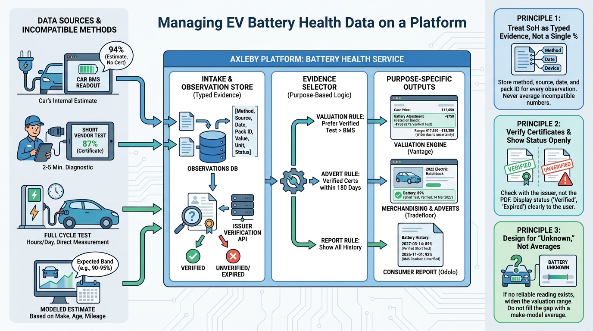

Part III — VALUE: Market Data, Valuation and Condition
The Battery Question: EV State of Health and Battery Data

Image generated by Google Gemini (gemini-3-pro-image-preview)
Part III — VALUE: Market Data, Valuation and Condition

Image generated by Google Gemini (gemini-3-pro-image-preview)